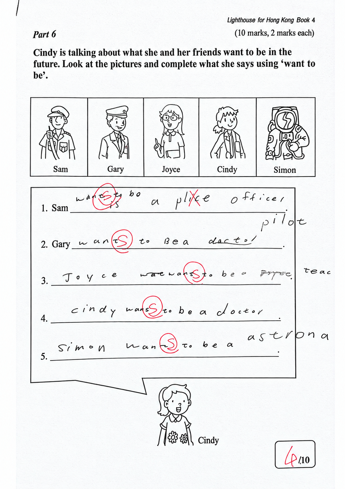
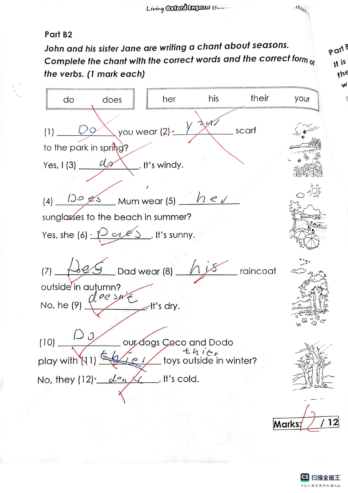

Answer: Checkpoint 1 → 2: west; Checkpoint 2 → 3: north; Checkpoint 3 → 4: east
已掌握
| # | 单词/词组 | 中文意思 | 例句/说明 | 已掌握 |
|---|---|---|---|---|
| noun 名词 | ||||
| 1 | library | 图书馆 | I read books in the library. | |
| 2 | playroom | 游戏房 | The children are in the playroom. | |
| 3 | tail | 尾巴 | The dog wags its tail. | |
| 4 | cleaner | 清洁工人 | The cleaner works every day. | |
| 5 | Monday | 周一 | I have an English lesson on Monday. | |
| 6 | Thursday | 周四 | We have art on Thursday. | |
| 7 | cookies | 曲奇饼 | Mum baked some cookies. | |
| 8 | address | 地址 | Please write your address on the envelope. | |
| verb 动词 | ||||
| 9 | have a meal | 吃饭 | We have a meal together every evening. | |
| 10 | pick | 采摘；挑选 | We pick apples from the tree. | |
| 11 | send | 发送 | I will send you a postcard. | |
| 12 | sweep | 打扫 | Please sweep the floor. | |
| 13 | assist | 协助帮助 | I assist my teacher by handing out books. | |
| preposition 介词 | ||||
| 14 | under | 在……之下 | The cat is under the table. | |
| phrase 短语 | ||||
| 15 | do sums | 数学计算 | We do sums in math class. | |
| adjective 形容词 | ||||
| 16 | quiet | 安静的 | Please be quiet. | |
| 17 | untidy | 不爱干净的 | My brother is untidy and leaves his clothes on the floor. | |
| adjective/adverb 形容词/副词 | ||||
| 18 | early | 早的；早地 | I get up early. | |
| verb phrase 动词短语 | ||||
| 19 | visit a museum | 去博物馆 | We visit a museum with our teacher. | |
| adverb 副词 | ||||
| 20 | usually | 通常 | I usually have breakfast at seven. | |
| # | 单词/词组 | 中文意思 | 例句/说明 | 已掌握 |
|---|---|---|---|---|
| adjective 形容词 | ||||
| 1 | excited | 兴奋的；激动的 | I was very excited on the first night. | |
| 2 | gentle | 温和的 | Gopal is gentle and polite. | |
| 3 | starving | 十分饥饿的 | They are starving after playing football. | |
| noun 名词 | ||||
| 4 | bunny | 小兔子 | The bunny eats a carrot. | |
| 5 | seed | 种子 | The bird pecks a seed. | |
| 6 | structure | 结构 | We are learning about sentence structure. | |
| 7 | campsite | 营地 | We put up our tent at the campsite. | |
| 8 | cycling | 骑自行车 | I like cycling at weekends. | |
| 9 | lettuce | 生菜 | Is there any lettuce in the fridge? | |
| 10 | 电子邮件 | He is writing an email to his mum and dad. | ||
| 11 | fridge | 冰箱 | Can you look in the fridge, please? | |
| 12 | pudding | 布丁 | We ate Christmas pudding after dinner. | |
| 13 | kitten | 小猫 | Milo is playing with a little kitten. | |
| noun phrase 名词短语 | ||||
| 14 | role model | 榜样；模范 | She is a role model for younger students. | |
| 15 | a slice of pizza | 一片披萨 | May I have a slice of pizza, please? | |
| 16 | General Studies | 常识科 | Some pupils like General Studies. | |
| 17 | Visual Arts | 视觉艺术课 | Sarah is good at Visual Arts. | |
| 18 | lucky draw | 抽奖 | I won a small prize in the lucky draw. | |
| verb 动词 | ||||
| 19 | chase | 追逐 | The dog may chase the ball. | |
| 20 | walk | 遛（狗）；带……散步 | I walk my dog along the river. | |
| 21 | feed | 喂 | How often do you feed Kitty? | |
| phrase 短语 | ||||
| 22 | Hong Kong Island | 香港岛 | My uncle lives on Hong Kong Island. | |
| verb phrase 动词短语 | ||||
| 23 | go camping | 去露营 | I want to go camping. | |
| 24 | watching cartoons | 看卡通片 | She likes watching cartoons. | |
| 25 | practise the piano | 练习弹钢琴 | I practise the piano every afternoon. | |
| 26 | pick up | 捡起，拾起 | We go to the beach and pick up the rubbish. | |
| 27 | get a pet | 饲养宠物 | Think carefully before you get a pet. | |
| adverb 副词 | ||||
| 28 | always | 总是 | We always turn off the lights when we leave a room. | |
| adjective/noun 形容词/名词 | ||||
| 29 | leftover | 剩下的；剩饭菜 | We ate the leftover rice. Put the leftovers in the fridge. | |
| adverbial phrase 副词短语 | ||||
| 30 | per day | 每天 | Our dog goes for two walks per day. | |
| # | 单词/词组 | 中文意思 | 例句/说明 | 已掌握 |
|---|---|---|---|---|
| time/date 时间日期 | ||||
| 1 | Tuesday | 星期二 | Tuesday is a weekday. | |
| 2 | Wednesday | 星期三 | Wednesday is a weekday. | |
| 3 | Friday | 星期五 | Friday is a weekday. | |
| time unit 时间单位 | ||||
| 4 | minute | 分 | A minute has 60 seconds. | |
| numbers 数字 | ||||
| 5 | eight | 8 | Eight is 8. | |
| 6 | nine | 9 | Nine is 9. | |
| 7 | twelve | 12 | Twelve is 12. | |
| 8 | fifteen | 15 | Fifteen is 15. | |
| 9 | seventy | 70 | Seventy is 70. | |
| 10 | ninety | 90 | Ninety is 90. | |
| 11 | hundred | 百 | One hundred is 100. | |
| solid shape 立体图形 | ||||
| 12 | pentagonal prism | 五棱柱 | A pentagonal prism has pentagonal faces. | |
| 13 | quadrilateral pyramid | 四棱锥 | A quadrilateral pyramid has one quadrilateral base and four triangular side faces. | |
| 14 | base | 底 | The base is at the bottom. | |
| geometry 几何 | ||||
| 15 | obtuse angle | 钝角 | An obtuse angle is greater than 90 degrees and less than 180 degrees. | |
| # | 单词/词组 | 中文意思 | 例句/说明 | 已掌握 |
|---|---|---|---|---|
| operations 运算 | ||||
| 1 | subtraction | 减法 | Subtraction means taking away. | |
| 2 | altogether | 一起 | How many are there altogether? | |
| 3 | be left | 剩下的 | How many apples will be left? | |
| geometry 几何 | ||||
| 4 | parallel | 平行 | Parallel lines never meet. | |
| 5 | adjacent side | 邻边 | These are adjacent sides. | |
| 6 | identical | 完全相同的 | These two triangles are identical in shape and size. | |
| 7 | dotted line | 虚线（点线） | Draw a dotted line between the two points. | |
| directions 方向 | ||||
| 8 | direction | 方向 | Direction tells us where to go. | |
| question word 题目词 | ||||
| 9 | calculate | 计算 | Calculate the answer. | |
| answer 答案 | ||||
| 10 | answer | 答案 | Write the answer in the box. | |
| place value 位值 | ||||
| 11 | units | 个位 | The digit is in the units place. | |
| comparison 比较 | ||||
| 12 | less | 更少的；小于 | 8 is less than 10. | |
| 13 | least | 最小的；最少的 | Which number is the least? | |
| time/date 时间日期 | ||||
| 14 | small division | 小格（钟面上的一分钟刻度） | The minute hand moves one small division in one minute. | |
| 15 | second hand | 秒针 | The second hand goes around the clock once in one minute. | |
| 16 | midnight | 半夜；午夜（凌晨零点） | Midnight is twelve o'clock at night. | |
| position 位置 | ||||
| 17 | below | 下面 | The box is below the table. | |
| operations calculation 运算 | ||||
| 18 | mixed operations | 混合运算 | Mixed operations use more than one operation. | |
| 19 | dividend | 被除数 | The dividend is divided by the divisor. | |
| 20 | horizontal form | 横式形式 | Write it in horizontal form. | |
| 21 | column form | 竖式形式 | Write it in column form. | |
| teacher math vocabulary 老师数学词汇 | ||||
| 22 | stop | 停 | Stop counting when you reach twenty. | |
| currency money 货币 | ||||
| 23 | cent | 分 | One cent is a small amount of money. | |
| 24 | exchange | 交换 | We exchange money at the counter. | |
| 25 | note | 纸币 | This is a five-dollar note. | |
| measurement 测量 | ||||
| 26 | fill | 填满 | Fill the jug with water. | |
| 27 | kilogram | 千克 | One kilogram is 1,000 grams. | |
| directions tool 方向工具 | ||||
| 28 | compass | 指南针 | A compass shows directions. | |
| 句型结构 | ||||
| 29 | ... is to the north of ... | ......位于......的北侧。 | The playground is to the north of the hall. | |
| plane shape 平面图形 | ||||
| 30 | trapezium | 梯形（只有一组对边平行的四边形） | A trapezium has exactly one pair of parallel sides. | |

